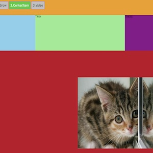
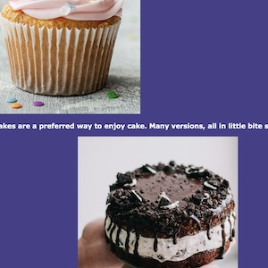
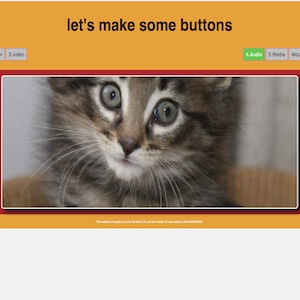
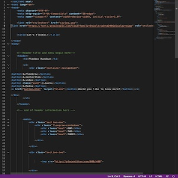
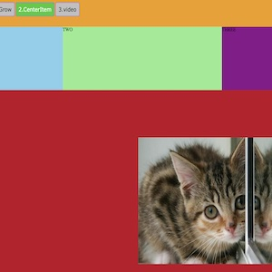
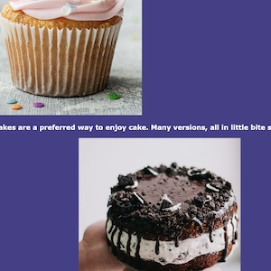
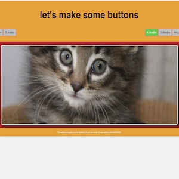
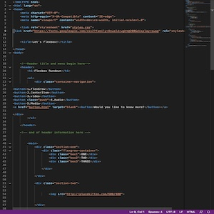

TYPOGRAPHIC SYSTEMS TASK
The Typography task was a very enjoyable task to complete as I got to learn about all the different type systems. It was the first task I started with for this course and I spent the most time on, as I had absolutely no idea how to use illustrater. At first it took me 3 hours to complete one poster, then watching tutorials and practicing more helped me explore all the different tools, which resulted in changing the designs many times. As for the 8 typographic systems I found it less challenging to understand especially after the workshop session where we got to create our first design and every student got a different system to explain. In addition, I found inspiration on Pintrest and on the internet that gave me a push to begin designing. Finally, I'm very happy with the color choice of this task and with how everything turned out.
By creating simple strokes across a paper and branching out lines of content from that stroke you have created an axial design.To make it even more interesting angle the text, add shapes and strokes here and there, or even stretch out some words. Finally, Axial design can be found all around us in nature such as tree trunks branching out or flower leaves growing from a central stem.
Writing on a circular path that curls around a certain point creates dilatational design. we can highlight the importance of a piece of text by placing it in an obvious spot on these curved lines of content and giving it a larger font. Although it gets difficult to read as we add more text, Dilatational designs are certainly for more fun looking posters rather than long pieces of text.
By centralizing all the text and then playing with it's position on the page we can achive the bilateral design. No matter how much we try to make the text look symmetrical it won't work as words are not symmetrical so is nothing in nature. Leaving plenty of white space on your page can make it look sleek if done properly, so don't hesitate to do that. Chop your content, tilt it to the left or right side of the page to make it visually pleasing.
To create random design we can forget all the rules for a moment, and begin positioning the text where we please on the page. Playing with shapes and swirls we can create a theme to the poster. In random design it does not matter if the content is readable or not as long as it conveys the messege of freedom in design. It's still important to make the most relevent text stand out somehow.
By writing your text in a more curved organic way you can achive transitional design.If angled to either side it can appear to be slipping out of the page. this design reminds me of ocean waves especially when its more spaced out on the page. This type design is considered disorganized which is why it's not widely used in flyers or posters.
Modular design can be achived by chosing a certain structure and repeating it across the page. It would be most suitable to use content that is already cut up when designing a modular poster.By displaying it in circles like I did above or using squares sometimes modular design can be mistaken for something else such as grid design. Therefore, its important to know that this design is all about repeating structure.
To create grid design the content has to be lined up into rows and columns. This typogeaphic design is a more boring one as all the text is lined neatly unlike the other designs where the text is wrapped around a cirlce or runs across the page.This text style works in books, posters, flyers it's the most common type in books as it displays the content in paraghraphs that can be easily read, and the writer has the freedom to display a photo right next to the paragraph as it would easily show that the photo and paragraph are connected.
To create a radial design we must have a central point with all the content radiating out from that point.Just like how a kid would draw the sun with so many lines surrounding the main circle which is our central point. Although, the easiest way to explain this design is is to use the example of the sun radial design does not have to come in a form of a circle these lines can radiate from a square or a triangle.We can group the relevent information together to make the content more understandable.
Contrast. Alignment. Repetiton. Proximity.
The CARP task was the second task I worked on, I noticed it had more creative freedom as we could use more than one color and any font of our choice. Contrast,Alignment,Repetiton,Proximity are the elements we had to include in this task to design 3 posters for a non-profit film festival. Although, we had the freedom to include photos from the internet I chose to challenge myself and try to make my posters pretty without adding photos.It was crucial for this task to identify the most important text in a strategic place as it would be the first anyone looking at the posters would read. Contrasting can be achived either by using diffferent colors or by making an item much smaller or larger than the ones close to it. On the other hand, Alignment can either be achived through text or objects on the poster. Aligning the text horizintally like I did in my first poster gives a sense that these paragraphs are related or connected in a way. Similarly, repetition has the same effect of making every element on the page feel related by repeating a certain design, color, or font across the poster you can achive unitly through design as evrything will look related. Finally, Proximity groups similar items closer together and seperates unrelated items away from each other.

In my first poster I decided to create a border for my poster and after trying many colors I thought why not use the actual logo as a border instead of placing it in the middle. In addition, I tried to mimic the black string like details around the logo and place the content of the poster in it. These were aligned on the page one closer to the left and the other closer to the right. I decided to leave the important date and the visit website without the string border to help make them stand out.

For my main poster I used three colors to create a Contrasting effect in the background. As for the popcorn I hand drew it making the outer stroke a light yellow color and the middle white to give it a more natural look. I also chose to place the logo in a repeating pattern where it is as I felt it was eye catching and it looks like it could be used realistically as the popcorn cup design. The stroke in the middle of the page helps the text look organized. Finally, the title of the festival is right at the center and is in a flashy color grab the readers attention to the event name first making it more memorable.
Finally, for my last poster I decided to go with the same blue color I used in the main poster for the background of this image. I also added the big letters that fill up the screen which represent the name of the festival and gave them similar colors to what appear in in the logo. The white stroke around the "T" adds contast as it is very diffrent to the colors around it. The logo placed right at the center where it can be seen. Lastly,the text is aligned at the edge of the stroke in the center of page highlighting it's importance.
CODING TASK
The coding task was a very helpful task to complete, as it had all the guidlines anyone would need on how to add much of the html and css of my website. In addition to that, it was quite fun to complete as it progressed each week in terms of complexity and design. I remember not knowing how to do the very first task as I barely knew how to use github, so i went home that day and struggled for a couple of hours but successfully completed the task, I was very happy to do so and since then I felt like the worksheets would assure me that I was learning somethng new in coding and designing websites. Finally, I was happy to see that many of the coding tasks had given creative freedom and words of encouragment to learn more or add our own touch in our worksheets.
 







USER EXPERIENCE TASK
The User experience task is a rather interesting task to look at, because at first I found it difficult to understand and identify exactly I needed to do for it. Over the past couple of weeks and as I looked more into this task I stumbled across the first flow chart I created during a workshop showing how I want my website to look like, at that moment I started to have a clearer idea of what this task would look like to me and how it can actually be helpful in terms of planning my work. Making my flowchart colorful gave me an idea about the colors i'd later include in my website. Adding small squares helped me identify where each task and photo fits on my website. Finally, having this task was great as it made me think more about the user, and try to look at my work from a different point of view.
hello